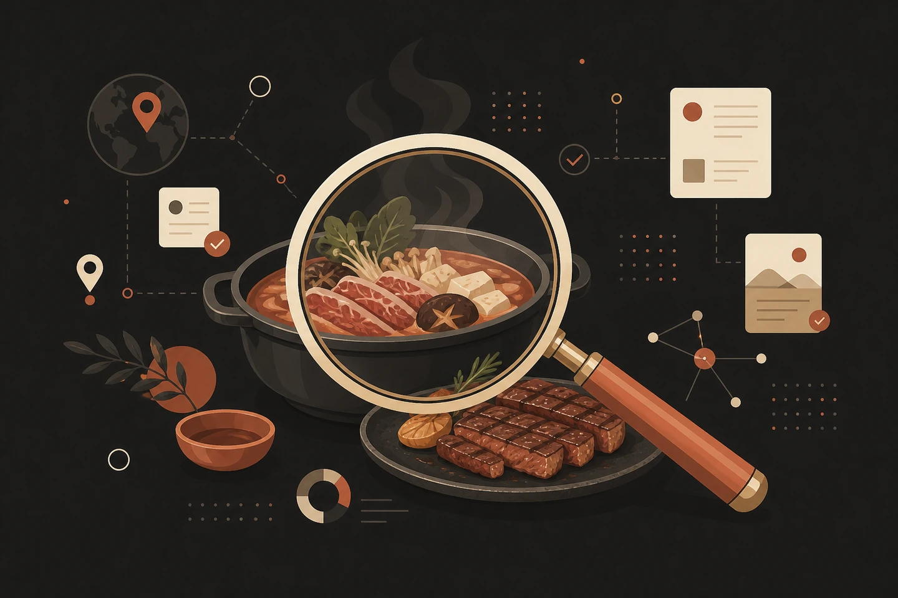

自然文から候補3件を調査
条件を読み取り、AIが飲食店候補3件を公開情報で調査します。
飲食店選びのAI公開情報リサーチ
OISINTは、ふだんの言葉で条件を入れるだけでAIが飲食店候補を3件調査し、出典URL付きのEvidence、判定、確度、矛盾まで並べて比較できるアプリです。登録不要。ブラウザでそのまま使えます。
共有URLを送れば、相手もブラウザから参加できます。
※無料・登録不要は現時点の提供条件であり、変更される場合があります。AIによる調査結果は正確性を保証するものではありません。
表示は機能イメージです。実際の調査結果ではありません（数値は架空値）。
Why OISINT
飲食店選びで本当に知りたいのは、候補名だけではありません。予算に収まるか、条件に合うか、根拠はどこか、情報が古くないか。OISINTは、判断に必要な確認作業を比較できる形に整えます。
Features
OISINTは「自然文入力 → AI調査 → Evidence付き比較 → 共同決定」までをひとつの流れにします。不明な点は不明として扱い、根拠のない断定を避けます。
条件を読み取り、AIが飲食店候補3件を公開情報で調査します。
公式サイト、メニュー、予約ページ、公開レビューなど、判断材料の出典URLを確認できます。
各候補を○/△/×/?で整理し、判定の確度も表示します。
営業時間や条件がソース間で食い違う場合は、確認が必要な点として表示します。
調査結果をURLで共有し、参加者が投票できます。結果はリアルタイムに同期されます。
似た条件の調査を探し、次の店選びの参考にできます。
How It Works
条件をきれいに整理してから使う必要はありません。普段の会話に近い書き方のまま、調査に進めます。
場所、人数、予算、食べたいもの、避けたい条件などを自然文で入力します。
候補3件について、条件に関係する公開情報を集め、出典URL付きのEvidenceとして整理します。
判定、確度、矛盾を見ながら候補を比較。共有URLと投票で、参加者全員が意思決定に加われます。
Evidence First
総合評価だけでは、何が決め手で何が不安かが見えません。OISINTは候補ごとに条件を並べ、根拠があるもの、不明なもの、矛盾があるものを分けて表示します。
表示は機能イメージです。実際の調査結果ではありません（数値は架空値）。
出典URLを開いて、AIの判断材料を自分でも確認できます。
Collaboration
表示は機能イメージです。実際の投票結果ではありません（票数は架空値）。

Start Research
OISINTは登録不要。ブラウザを開いて、最初の条件入力から始められます。
※登録不要・無料での提供は現時点の条件であり、変更される場合があります。